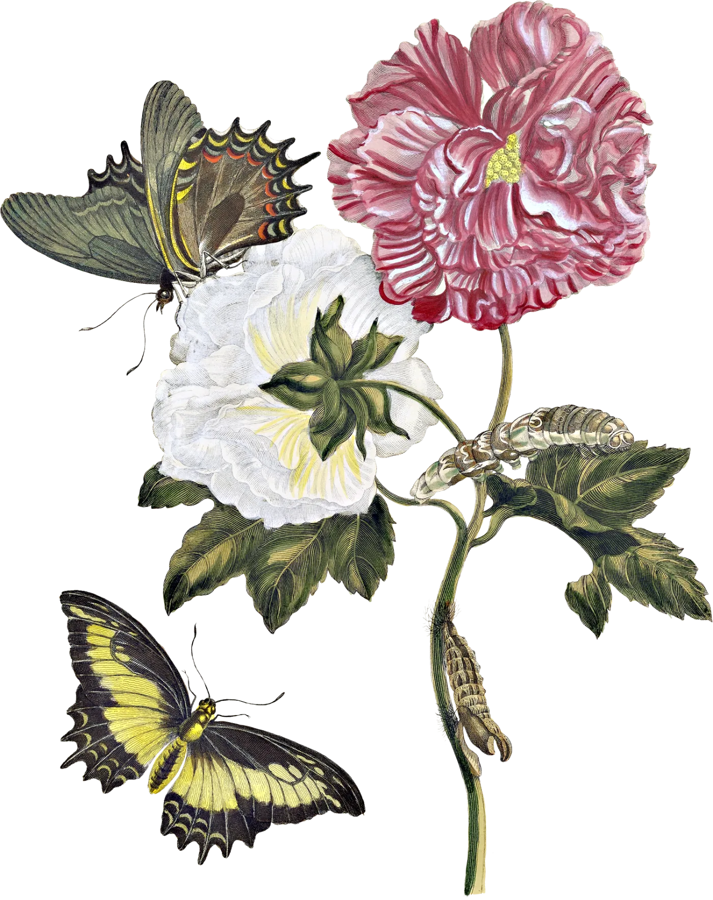
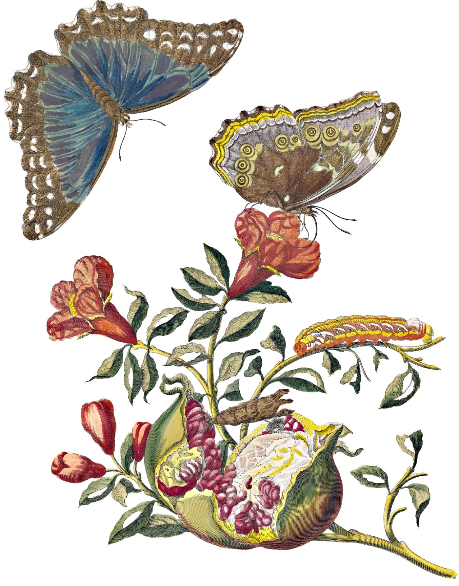

La palabra que encontraste nos adentra en la selva.
Hay adentro tuyo una bestia gritando que el mundo es exactamente lo que quería Ser
Ser. Ser Selva es estar en expansión permanente y esa es la belleza abrumadora que aparece en lo que hace. Siento que usted no lo reconoce y le cuesta afirmarlo pero la Selva mira siempre hacia adentro, mira su frondosidad, su exuberancia porque la Selva vive para sí misma y no necesita de lo que está afuera.
Explorar, buscar, sobrevivir en la Selva es difícil porque siempre hay amenazas que nos asustan y producen miedo. Nos reta, pero es ALLÍ en medio del espacio abrumador de la Selva que conectamos.
Pero la Selva nunca mira hacia afuera porque su inmensidad está adentro en todo su esplendor que no se puede medir, no hay cómo porque sencillamente no lo necesita, porque nunca se compara, porque es incomparable.
Maggie Smith lo escribe en su libro Podrías hacer de esto algo bonito:
Sentimos y sentimos, y vivimos y vivimos, pero de algún modo nunca nos colmamos. Esta vida es elástica, increíblemente elástica. Siempre caben más experiencias. Nuestras vidas se expanden para hacer sitio a todo.
Me gusta sentir la energía de la Selva (Usted) en el evento de hoy y de todo este proyecto. Es esa energía la que me hace resonar, la que me hace feliz poder mirarla y sobre todo admirarla.
Hoy Palma Pitón es el resultado de esa Selva, un fluir constante que habita en usted y que sólo esa naturaleza Salvaje tan suya le permite moverse en ese mundo. Por eso la hace absolutamente única en su forma particular de ver el mundo.
Esta canción tiene tres versos que me hacen pensar siempre en usted. Esta es una canción de Joaquín Sabina y comienza con un Yo no quiero un amor civilizado y es justo lo que creo que siempre pasa con usted: todo tiene que ser Salvaje, nada puede ser civilizado. Y los otros dos dicen:
Porque el amor cuando no muere mata
Porque amores que matan nunca mueren
Yo sé que ya conoce estos versos porque se los he escrito mucho pero sin duda usted sabe que me mata.